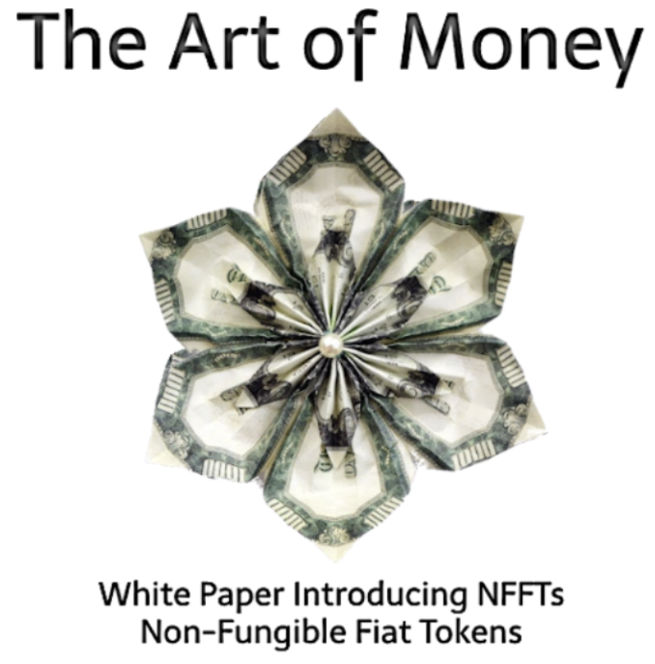

NFFTs
Non-Fungible Fiat Tokens
nfft.dev
white paper

What are NFFTs?
NFFTs are datas that are minted on a blockchain.
These datas consist of the digital image and serial number data of actual fiat currency minted onto a blockchain.
Each dollars image, serial number and value is saved as a SVG block of data and triple hashed with 256-SHA algorithm.
- - - - - - - - - - - - - - -
- -
_ MD 3457683 B _
_ _ _ _ _ _ _ _ _ _ _ _ _ _ _
_ _
_ -- _
_ | | _
_ | | _
_ -- _
_ _ _ _ _ _ __ _ _ _ _ _ _ _
_ _
_ MD 3457683 B _
_ _
- - - - - - - - - - - - - - -
Banks already have bill counter scanners.
We develop the software that saves that data as blockchain entry attributes using an Ethereum smart contract.
(NFFTs) Non-Fungible Fiat Tokens
Re-Minting Fiat Currency into NFTs